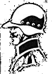

Quesque le Stratego :
Le stratego est un jeu de société de stratégie qui se joue à 2. Le joueur est à la tête d'une armée de 40 soldats, chaque pièce joue un rôle précis. La partie se déroule sous forme de tour par tour.
But du jeu :
Le but du jeu est de capturer le Drapeau de l'adversaire. Si un joueur ne peut plus déplacer une pièce, la partie s'arrête.
Particularité du jeu :
Un joueur incarne l'armée des rouges et l'autre celle des bleus. On ne voit pas les pièces de l'autre joueur mais on connait leur position. Si une bataille entre 2 pièces a lieu, ces dernières sont révélées. La dimension du plateau de jeu est de 10 cases par 10 cases. Sachant qu'il y a 8 cases inaccessible par les pièces, elles sont représentées par des volcans.
Début du jeu :

Au début de la partie le placement des pièces est très importante, elle est le fondement de votre stratégie. Faites votre choix de façon judicieuse.
Pièces du jeu :
-
Le Maréchal :
Le maréchal est une unité qui peut se déplacer d'une case dans n'importe quelle direction.
Le maréchal a une force de 10. -
Le Général :
Le général est une unité qui peut se déplacer d'une case dans n'importe quelle direction.
Le general a une force de 9. -
Le Colonel :
Le colonel est une unité qui peut se déplacer d'une case dans n'importe quelle direction.
Le colonel a une force de 8. -
Le Commandant :
Le commandant est une unité qui peut se déplacer d'une case dans n'importe quelle direction.
Le commandant a une force de 7. -
Le Capitaine :
Le capitaine est une unité qui peut se déplacer d'une case dans n'importe quelle direction.
Le capitaine a une force de 6. -
Le Lieutenant :
Le lieutenant est une unité qui peut se déplacer d'une case dans n'importe quelle direction.
Le lieutenant a une force de 5. -
Le Sergent :
Le sergent est une unité qui peut se déplacer d'une case dans n'importe quelle direction.
Le sergent a une force de 4. -
Le Démineur :
Le démineur est l'unité qui permet de détruire les bombes, elle se déplace d'une case dans n'importe quelle direction.
Le démineur a une force de 3. -
L'Eclaireur :
L'éclaireur est l'unité la plus rapide, elle peut se déplacer en ligne droite autant de case qu'elle veut. L'éclaireur peut se déplacer dans n'importe quelle direction.
L'éclaireur a une force de 2. -
L'Espion :
L'espion se déplace d'une case dans n'importe quelle direction.
L'espion est l'unité la plus faible, un de force. Mais si elle attaque le maréchal en premier, le maréchal meurt. -
La Bombe :
La bombe ne se déplace pas mais elle est une très bonne unité de défense.
La bombe détruit n'importe qu'elle unité sauf le démineur. -
Le Drapeau :
Le drapeau est le pion à protéger, il ne peut pas se déplacer.
Si le drapeau se fait attaquer par n'importe quelle unité, la partie est perdue.